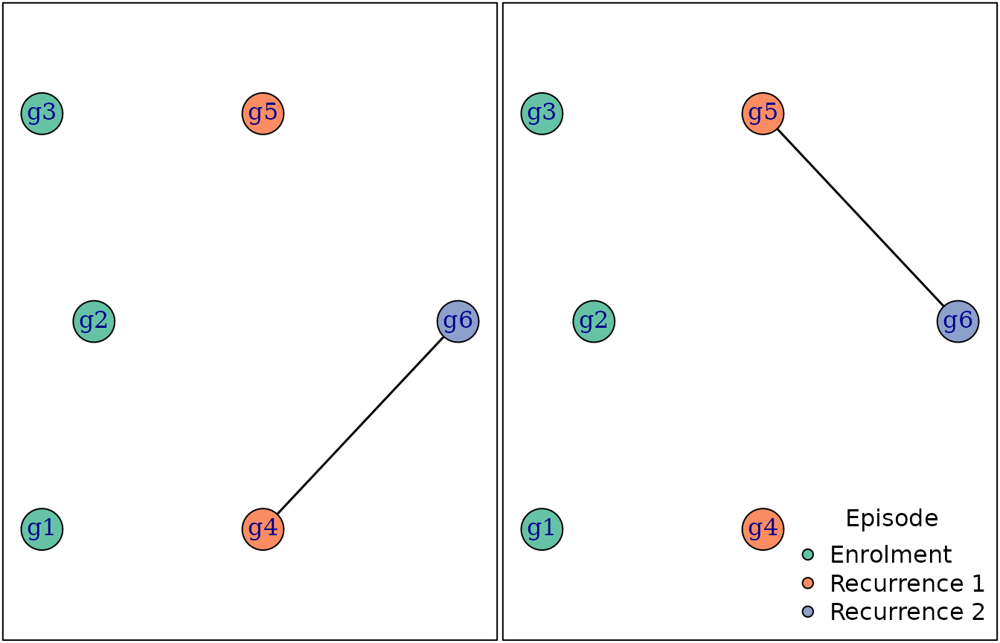

In this vignette we demonstrate the basic Pv3Rs work
flow for a single study participant; i.e.,
- Plot data
- Estimate recurrent state probabilities
- Plot probability estimates
And we show how one might explore relationship graphs and their log
likelihoods. In one or more upcoming scientific publications, we plan to
publish a more elaborate study-level Pv3Rs tutorial
including examples of
- how to generate estimates pairwise when the total genotype count over multiple recurrences exceeds eight
- how to compute false discovery rates
- how to do a sensitivity analysis for genotyping errors
- how to do a sensitivity analysis for sibling misspecification
- an alternative genetic distance based approach using whole-genome sequence data
- how posterior probabilities (rather than binary classifications) can be used estimate treatment efficacy
- an estimation of a false negative rate
Basic workflow
We first look at a synthetic example of three episodes (episode names are optional) with three markers (marker names are obligatory) whose alleles have known frequencies.
y <- list("Enrollment" = list(m1 = c('C','G','T'),
m2 = c('A','C'),
m3 = c('C','G','T')),
"Recurrence 1" = list(m1 = c('C','T'),
m2 = c('A'),
m3 = c('A','C')),
"Recurrence 2" = list(m1 = c('T'),
m2 = c('A'),
m3 = c('A')))
fs <- list(m1 = c(A = 0.27, C = 0.35, G = 0.18, T = 0.20),
m2 = c(A = 0.78, C = 0.14, G = 0.07, T = 0.01),
m3 = c(A = 0.21, C = 0.45, G = 0.26, T = 0.08))We plot the data using plot_data().

Different colours in the plotted data (left) represent different alleles. The legend (right) shows all alleles per marker with one column per marker. The order of the markers in the legend is the same as that in the plotted data (see horizontal axis, left). When allele frequencies are specified, the heights of differently coloured areas in the legend are proportional to allele frequencies, s.t. rare alleles have relatively small legend areas (e.g., T at m2 is rare).
Aside Given the maximum number of alleles observed
per-episode, the most parsimonious explanation is that there are 3, 2, 1
distinct parasite genotypes in the three episodes respectively (a
genotype is here defined as a realisation of the haploid parasite genome
representing a group of clonal parasites). In this synthetic example,
markers are quart-allelic for brevity; this imposes a rather low upper
bound on MOI estimates based on maximum per-marker allele counts. In
reality, more diverse markers are recommended for recurrent state
inference. If better MOI estimates were available based on more diverse
markers, the data from those more diverse markers could be added to the
data input y of compute_posterior(). If better
MOI estimates based on heteroallelic marker counts across many markers
were available, they could be used in recurrent state inference by
specifying the MOI argument in the function
compute_posterior().
When performing genetic recurrent state inference, the bulk of the computational time lies in computing log-likelihoods of graphs of relationships between genotypes.
post <- compute_posterior(y, fs)
#> Number of valid relationship graphs (RGs) is 1315
#> =============================================================================|
#> Computing log p(Y|RG) for 1315 RGs
#> =============================================================================|
#> Finding log-likelihood of each vector of recurrent states
#> =============================================================================|In the call to compute_posterior() above we did not
specify a prior, and so a uniform prior across all three recurrence
states per recurrence is assumed by default. Marginal posterior
probabilities (probabilities of recrudescence C, relapse
L, and reinfection I for each recurrence) are
stored in post$marg.
post$marg
#> C L I
#> Recurrence 1 0.000000 0.3294555 0.67054446
#> Recurrence 2 0.670205 0.2388744 0.09092065Marginal posterior probabilities can be plotted on the simplex using
the function plot_simplex().
# Plot simplex
par(mar = rep(0.1,4))
plot_simplex(v_labels = c(C = "Recrudescence",
L = "Relapse",
I = "Reinfection")[colnames(post$marg)])
# Project marginal posterior probabilties onto 2D coordinates
xy <- apply(post$marg, 1, project2D)
xy_prior <- project2D(rep(1/3,3))
# Plot projection on the simplex
points(x = xy["x",], y = xy["y",], pch = 20)
text(x = xy["x",], y = xy["y",], pos = 3, labels = gsub("_", " ", rownames(post$marg)))
# Add default prior per recurrence
points(x = xy_prior["x"], y = xy_prior["y"], pch = 20)
text(x = xy_prior["x"], y = xy_prior["y"], pos = 3, labels = "Prior probability")
The point in the yellow region is most likely a recrudescence with posterior probability greater than 0.5 (it falls in the bright yellow region); the point in the red region is most likely a reinfection with posterior probability greater than 0.5 (it falls in the bright red region).
Joint posterior probabilities (probabilities of chronological
sequences of recrudescence C, relapse L, and
reinfection I) are stored in post$joint. Here,
we find the most likely sequence of recurrence states is
r names(which.max(post$joint)) with posterior probability
r post$joint[which.max(post$joint)]
post$joint
#> CC LC IC CL LL IL CI
#> 0.00000000 0.21338194 0.45682305 0.00000000 0.08501504 0.15385932 0.00000000
#> LI II
#> 0.03105856 0.05986209Aside: we do not recommend running compute_posterior()
for data whose total genotype count (sum of per-episode multiplicities
of infection) exceeds eight. That said, we have not imposed a hard limit
on the code. It is possible, but very long, to generate estimates using
data with a total genotype count up to 10 (see code below, which we time
out after 2 seconds); above 10 genotypes, calls to
compute_posterior() are liable cause memory-use problems
and fail.
Exploration of relationship graphs and their log likelihoods
If we want to explore relationship graphs and their log likelihoods
we need to set both return.RG and return.logp
to TRUE when computing the posterior; they are
FALSE by default (see below).
To compute the posterior, summations over per-marker allelic
assignments that are equivalent up to within-episode genotype
permutations are redundant. As such, by default,
compute_posterior() does not sum over them, conserving both
memory and compute time; see enumerate_alleles(). The
exploitation of permutation symmetry requires a scheme to choose a
single representative among permutations that are otherwise equivalent.
When user-specified MOIs are greater than those based on per-marker
allele counts, compute_posterior() sums over all
permutations because the scheme is too complicated. Likewise, to compute
meaningful graph likelihood values (i.e., values that are not dependent
on the aforementioned representative-choosing scheme), all permutations
are summed over when return.logp = TRUE.
post <- compute_posterior(y, fs, return.RG = TRUE, return.logp = TRUE)
#> Number of valid relationship graphs (RGs) is 1315
#> =============================================================================|
#> Computing log p(Y|RG) for 1315 RGs
#> =============================================================================|
#> Finding log-likelihood of each vector of recurrent states
#> =============================================================================|We recover the same posterior as before
post$joint
#> CC LC IC CL LL IL CI
#> 0.00000000 0.21338194 0.45682305 0.00000000 0.08501504 0.15385932 0.00000000
#> LI II
#> 0.03105856 0.05986209The log-likelihood of each relationship graph is also returned in the output. We plot the relationship graph(s) with the largest likelihood.
# Extract all log likelihoods
lliks <- sapply(post$RGs, function(RG) RG$logp)
# Extract the relationship graphs (RGs) with the largest log likelihood
RGs <- post$RGs[which(abs(lliks - max(lliks)) < .Machine$double.eps^0.5)]
# Generate genotype names
gs <- paste0("g", 1:6)
# Generate episode indices for genotypes
ts_per_gs <- rep(1:length(y), determine_MOIs(y))
# The sequences of states compatible with RGs
seqs_comp <- sapply(RGs, compatible_rstrs, gs_per_ts = split(gs, ts_per_gs))
# Plot RG
par(mar = rep(0.1,4), mfrow = c(1,2))
for(i in 1:length(RGs)) {
plot_RG(RG_to_igraph(RGs[[i]], gs, ts_per_gs), vertex.size = 20)
box()
}
# Generate infection colours in order to add a legend
infection_colours <- RColorBrewer::brewer.pal(n = 8, "Set2")
# Add a legend
legend("bottomright", pch = 21, pt.bg = infection_colours[unique(ts_per_gs)],
bty = "n", legend = names(y), title = "Episode")
N.B. There are two symmetric graphs with maximum likelihood: they are isomorphic up to within-episode genotype permutations. The user should note that, as in the current example, the relationship graph(s) with the largest likelihood (e.g., those above) might not be in the equivalence class for which the data are most probable when all relationship graphs in that class are summed over (e.g., those below).
The user should also note that,
the maximum-likelihood graph(s) might be incompatible with the maximum-posterior state sequence (albeit not true of the current example: the graphs above are compatible with IC)
the graphs in the maximum-likelihood equivalence class might be incompatible with the maximum-posterior state sequence (true of the current example, given the class with the largest likelihood contains graphs with sibling edges that are incompatible with IC).
sorted_lliks <- sort(lliks, decreasing = T) # Sort log likelihoods
adj_equal <- abs(diff(sorted_lliks, lag = 1)) < .Machine$double.eps^0.5 # Find matches
decr_idxs <- which(adj_equal == FALSE) # Change points: 2, 8, 14, 20, 32, ...
class_sizes <- c(decr_idxs[1], diff(decr_idxs)) # Number of graphs per class
# log likelihood of representative from each 'equivalence class' (EC)
lliks_unique <- sorted_lliks[decr_idxs]
# EC likelihood
class_ps <- exp(lliks_unique)*class_sizes
max_class_p <- which(class_ps == max(class_ps)) # ML EC index
max_idx <- decr_idxs[max_class_p] # Index of last graph in ML EC
max_size <- class_sizes[max_class_p] # Number of graphs in ML EC
# Plot all graphs within the ML EC
par(mar = rep(0.1,4), mfrow = c(3,4))
RG_order <- order(lliks, decreasing = T) # order RGs by logl
for(i in (max_idx-max_size+1):max_idx) { # EC consists of the RGs with logl rank 21-32
RG <- post$RGs[[RG_order[i]]]
RG_igraph <- RG_to_igraph(RG, gs, ts_per_gs)
plot_RG(RG_igraph, vertex.size = 25, vertex.label = NA)
box()
}